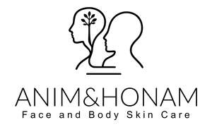

Trade Mark Journal No.2026/007 13 February 2026
UK00004325803 18 January 2026 (3,35,44)

- Class 3
- Moisturising body lotion [cosmetic]; Moisturizing body lotions; Body moisturisers; Body and facial creams [cosmetics]; Body oils [for cosmetic use]; Body creams [cosmetics]; Body and facial butters; Beauty creams for body care; Lotions for face and body care; Body care cosmetics; Body lotions; Body creams; Deodorants for body care; Body lotion; Skin care lotions [cosmetic]; Skin care oils [cosmetic]; Body and facial oils; Moisturising skin lotions [cosmetic]; Moisture body lotion; Body cream; Body oil [for cosmetic use]; Cosmetic body scrubs; Body scrubs [cosmetic]; Body shampoos; Body butter; Body and facial gels [cosmetics]; Skin care creams [cosmetic]; Cosmetic creams for skin care; Body butters; Body cream for cosmetic use; Hair care lotions [for cosmetic use]; Skin lotions; Lotions for the skin; Soaps for body care; Cosmetic body mud; Face and body lotions; Moisturising skin creams [cosmetic]; Creams (Non-medicated -) for the body; Skin moisturizers used as cosmetics; Scented body creams; Body mask lotion; Skin moisturizers; Cosmetic preparations for body care; Skin cream [for cosmetic use]; Body cream soap; Hair care creams [for cosmetic use]; Scented body lotions and creams; Skin balms [cosmetic]; Skin care oils [non-medicated]; Skin lotion; Skin moisturisers; Exfoliating scrubs for the body; Body oils; Face and body creams; Hair care lotions; Cosmetic creams for the skin; Skin creams [for cosmetic use]; Skin moisturizer; Skin creams [cosmetic]; Scented body lotions; Body mask cream; Skin care cosmetics; Oils for moisturising the skin after sunbathing; Exfoliants for the care of the skin; Skin cleansing lotion; Cosmetic hair lotions; Hair and body wash; Perfumed oils for skin care; Skin care mousse; Body gels [cosmetics]; Skin cleansers [cosmetic]; Body massage oils; Skin cleansing cream [non-medicated]; Cosmetic creams for dry skin; Skin cleansing cream; Exfoliating body scrub; Oils for the skin; Facial moisturisers [cosmetic]; Hair care creams; Body firming creams; Non-medicated skin lotions; Body deodorants; Skin make-up; Skin moisturiser; Skin cream; Skin recovery creams [cosmetics]; Hair moisturizers; Skin conditioning creams for cosmetic purposes; Skin creams; Creams for the skin; Hair moisturisers; Hand and body butter; Sun care lotions [for cosmetic use]; Cleansing milks for skin care; Skin emollients; Non-medicated body soaks; Body scrub; Creams for tanning the skin; Skin hydrators for cosmetic purposes; Skin toners [cosmetic]; Cosmetic creams for firming skin around eyes; Skin hydrators; Cosmetic nourishing creams; Skin moisturizer masks; Hair strengthening treatment lotions; Cosmetic facial lotions; Facial lotions [cosmetic]; Body scrubs; Cosmetics for the treatment of dry skin; Body emulsions for cosmetic use; Skin care (Cosmetic preparations for -); Cosmetic preparations for skin care; Make-up for the face and body; Skin cleansers; Non-medicated skin serums; Hair care serums; Cosmetics for use in the treatment of wrinkled skin; Hair lotions; Non-medicated body care preparations; Cosmetic oils for the epidermis; Toning lotion, for the face, body and hands; Body cleansing foams; Body powder (Non-medicated -); Skin relief serum [cosmetic]; Hair lotion; Beauty care cosmetics.
- Class 35
- Online retail store services relating to cosmetic and beauty products; Retail services in relation to hair products; Online retail services relating to cosmetics; Mail order retail services for cosmetics; Retail services in relation to toiletries; Retail services in relation to beauty implements for humans; Retail services relating to fragrancing preparations.
- Class 44
- Cosmetic treatment services for the body, face and hair; Cosmetic treatment for the body; Cosmetic facial and body treatment services; Cosmetic body care services; Cosmetic skin tanning services for human beings; Skin care salons; Consultation services relating to beauty care; Beauty care services; Skin care salon services; Consultation services relating to skin care; Services for the care of the hair; Hair care services; Advisory services relating to hair care; Services for the care of the skin; Hygienic and beauty care services; Beauty care services provided by a health spa; Cosmetic body care services provided by health spas; Provision of hygienic and beauty care services; Services for the care of the scalp; Consultancy services relating to cosmetics; Beauty information services; Consultancy provided via the Internet in the field of body and beauty care; Information relating to beauty care; Advisory services relating to cosmetics; Personal therapeutic services relating to hair regrowth; Advisory services relating to beauty treatment; Consultancy services relating to beauty; Services for the care of the face; Beauty treatment services; Haircare services; Health spa services; Beauty therapy services; Advisory services relating to beauty.
MR Richard Snowball